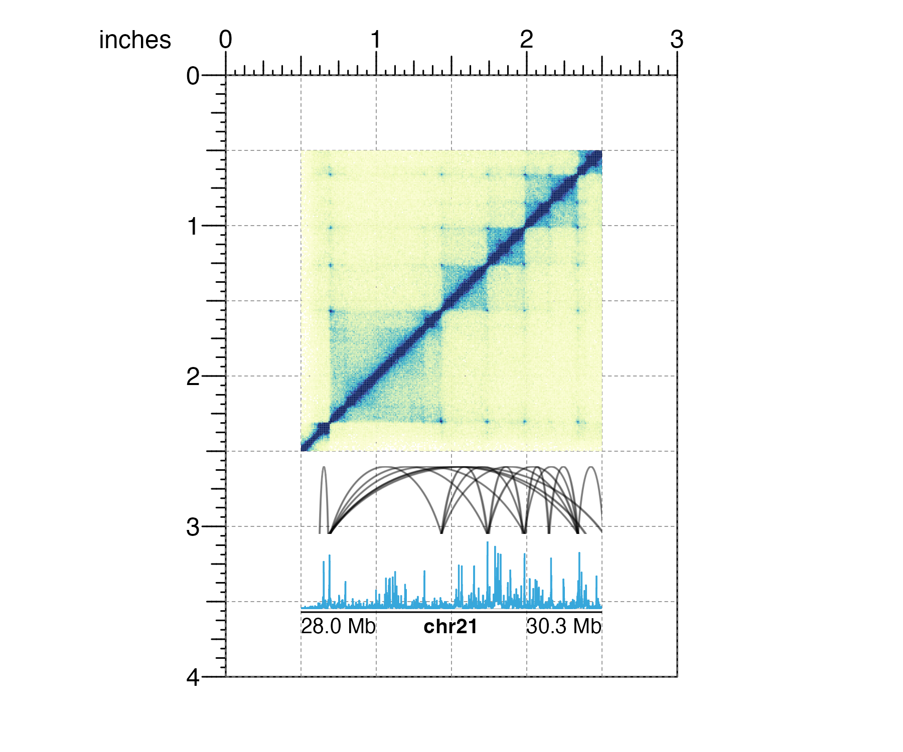

plotgardener was developed to give users unparalleled control in plotting and arranging multiple figures entirely within the R plotting environment. This functionality is motivated by the following design principles:
Coordinate-based plot placement
A coordinate-based plotting system provides users with exquisite control over plot sizes and arrangements through a user-defined page and common units of measurement. This system makes the plotgardener plotting process intuitive and absolute, meaning that plots cannot be squished and stretched based on their relative sizes and placements. Users can create a page in their preferred size and unit of measurement:
pageCreate(width = 3, height = 3, default.units = "inches")and then make and precisely arrange plots within this defined landscape. If users want the top, left corner of their plot to be 0.5 inches down from the top of this page and 0.5 inches from the left:
and users want their plot be 2 inches wide and 1 inch tall:
plotgardener can make the plot with these exact parameters:
## Create plotgardener page
pageCreate(width = 3, height = 3, default.units = "inches")
## Load signal data
data("IMR90_ChIP_H3K27ac_signal")
## Plot and place signal data with precise measurements
signalPlot <- plotSignal(
data = IMR90_ChIP_H3K27ac_signal,
chrom = "chr21", chromstart = 28000000, chromend = 30300000,
x = 0.5, y = 0.5, width = 2, height = 1,
just = c("left", "top"), default.units = "inches"
)This exact plot sizing and placement is particularly important and useful for standardized and accurate data comparisons along the x and y-axes.
Containerized, edge-to-edge visualizations
With the stacked nature of genomic plots, it is critical that aligned plots correspond to the same genomic regions to ensure figure accuracy. By separating data plotting from plot annotations, data fills defined plot coordinates and dimensions from edge to edge and precisely preserves the mapping between the data and its user-defined container. For example, if a user creates a 2 inch-wide gene track and wants that plot to represent the genomic region chr8:1000000-2000000, this genomic region will exactly span the 2 inch width:
library(TxDb.Hsapiens.UCSC.hg19.knownGene)
library(org.Hs.eg.db)
## Create plotgardener page
pageCreate(width = 3, height = 2, default.units = "inches")
## Define genomic region with `pgParams`
genomicRegion <- pgParams(chrom = "chr8",
chromstart = 1000000, chromend = 2000000,
assembly = "hg19")
## Plot genes with background color highlighting size
genesPlot <- plotGenes(
params = genomicRegion, bg = "#f6f6f6",
x = 0.5, y = 0.5, width = 2, height = 1,
just = c("left", "top"), default.units = "inches"
)
## Annotate genome label
annoGenomeLabel(
plot = genesPlot, scale = "Mb",
x = 0.5, y = 1.5,
just = c("left", "top"), default.units = "inches"
)When it’s time to stack various data types along the same genomic region, users can be confident in accurately aligning containers of the same width:
## Load data
library(plotgardenerData)
data("IMR90_HiC_10kb")
data("IMR90_DNAloops_pairs")
data("IMR90_ChIP_H3K27ac_signal")
## Define genomic region and widths of all plots
params <- pgParams(
chrom = "chr21", chromstart = 28000000, chromend = 30300000,
assembly = "hg19",
x = unit(0.5, "inches"), width = unit(2, "inches")
)
## Create plotgardener page
pageCreate(width = 3, height = 4, default.units = "inches")
## Plot Hi-C data in region
hicPlot <- plotHicSquare(
data = IMR90_HiC_10kb,
params = params,
y = 0.5, height = 2,
just = c("left", "top"), default.units = "inches"
)
## Plot and align DNA loops in region
bedpeLoops <- plotPairsArches(
data = IMR90_DNAloops_pairs,
params = params, fill = "black", linecolor = "black",
y = 2.6, height = 0.45,
just = c("left", "top"), default.units = "inches"
)
## Plot and align signal track in region
signalPlot <- plotSignal(
data = IMR90_ChIP_H3K27ac_signal,
params = params,
y = 3.1, height = 0.45,
just = c("left", "top"), default.units = "inches"
)
## Annotate genome label
annoGenomeLabel(
plot = signalPlot,
params = params, scale = "Mb",
y = 3.57, just = c("left", "top"), default.units = "inches"
)
Programmatic and reproducible multi-panel figures
Data visualization is most rigorous and accurate when it is reproducible. Although many visualizations are initially designed with code, final customizations and arrangements of figures are typically made with third party graphic design software and cannot be easily replicated. plotgardener makes this entire process programmatic, from raw data input to finalized, complex visualization. This means that if users define the same data:
library(TxDb.Hsapiens.UCSC.hg19.knownGene)
library(org.Hs.eg.db)
library(ggplot2)
data(mtcars)
library(plotgardenerData)
data("IMR90_HiC_10kb")
head(IMR90_HiC_10kb)
#> chr21 chr21 counts
#> 1 28000000 28000000 70
#> 2 28000000 28010000 70
#> 3 28010000 28010000 70
#> 4 28000000 28020000 70
#> 5 28010000 28020000 70
#> 6 28020000 28020000 70and the same plotgardener code:
## Create a plotgardener page
pageCreate(width = 7, height = 3.5, default.units = "inches")
## Define genomic region with `params`
params <- pgParams(chrom = "chr21",
chromstart = 28000000, chromend = 30300000,
assembly = "hg19")
## Plot Hi-C data
hicPlot <- plotHicTriangle(
data = IMR90_HiC_10kb,
params = params,
x = 0.5, y = 0.5, width = 3, height = 1.5,
just = c("left", "top"), default.units = "inches"
)
## Add color scale annotation
annoHeatmapLegend(
plot = hicPlot,
x = 3.5, y = 0.5, width = 0.12, height = 1,
just = c("right", "top"), default.units = "inches"
)
## Plot gene track in same genomic region
genesPlot <- plotGenes(
params = params,
x = 0.5, y = 2.25, width = 3, height = 0.5,
just = c("left", "top"), default.units = "inches"
)
## Label genomic region
annoGenomeLabel(
plot = genesPlot,
x = 0.5, y = 2.8, just = c("left", "top"), default.units = "inches"
)
## Create and place mtcars boxplot
boxPlot <- ggplot(mtcars) +
geom_boxplot(aes(gear, disp, group = gear))
plotGG(
plot = boxPlot,
x = 4, y = 0.5, width = 2.5, height = 2,
just = c("left", "top"), default.units = "inches"
)
## Label panels
plotText(
label = "A", fontsize = 16, fontface = "bold",
x = 0.75, y = 0.5, just = "center", default.units = "inches"
)
plotText(
label = "B", fontsize = 16, fontface = "bold",
x = 3.75, y = 0.5, just = "center", default.units = "inches"
)
## Hide page guides
pageGuideHide()they will generate the exact same multi-panel visualization:
Not only does this make visualizations entirely reproducible with code, but it also makes it easy to change data ranges and aesthetics with simple pieces of code:
## Change colors while maintaining plot layout
hicPlot <- plotHicTriangle(
data = IMR90_HiC_10kb,
params = params,
palette = colorRampPalette(c("white", "steel blue")),
x = 0.5, y = 0.5, width = 3, height = 1.5,
just = c("left", "top"), default.units = "inches"
)
genesPlot <- plotGenes(
params = params,
fill = c("grey", "grey"), fontcolor = c("black", "black"),
x = 0.5, y = 2.25, width = 3, height = 0.5,
just = c("left", "top"), default.units = "inches"
)
Utilizing grid graphics viewports
plotgardener achieves its functionality through grid graphics viewports, or defined graphical regions. A plotgardener page is defined by one large viewport with specified dimensions and units. Subsequent plots each have their own viewport that are placed on the larger page viewport. These viewports give users the power to specify the size and placement of each plot’s container and clip data to precise axis measurements.